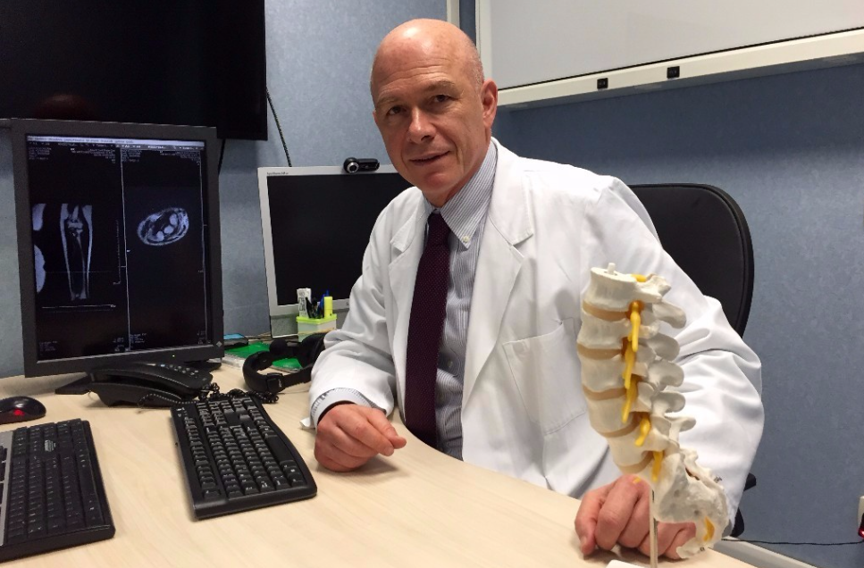
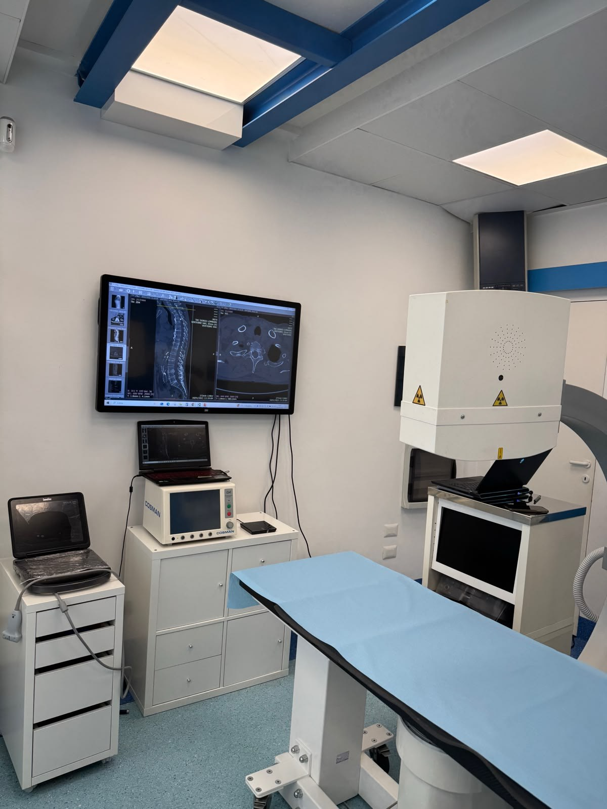
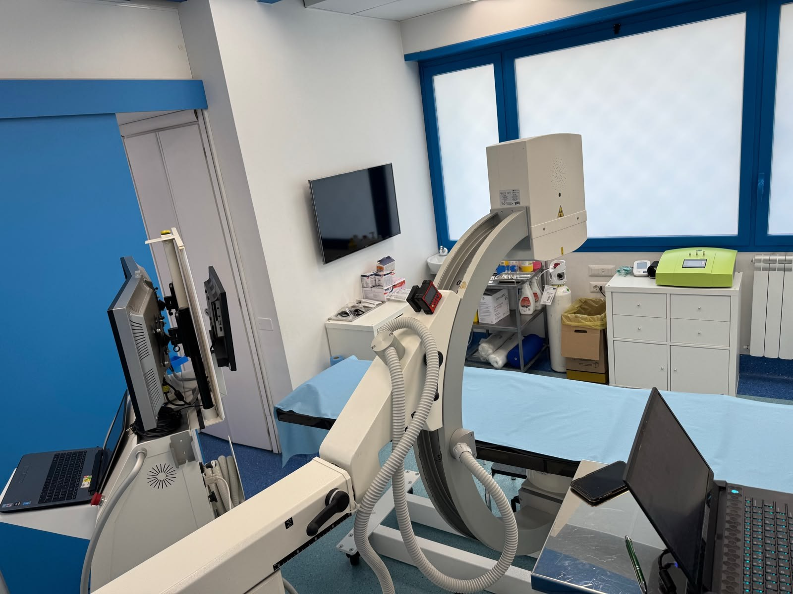

Supporto Terapeutico Mirato™
Prof. Marco Mastantuono
Specialista in Diagnostica delle Immagini. Interventistica sotto guida imaging.
Patologie del sistema muscolo-scheletrico, del sistema nervoso periferico, dolore articolare, colonna vertebrale, dolori post chirurgici e nevralgia cervicogenica. Terapia del dolore sotto guida ecografica e radiologica.

Esperienza e credenziali
Una lunga esperienza nella valutazione dei casi complessi
Grande esperienza nella valutazione di casi medici e di approcci chirurgici attraverso una quarantennale esperienza e collaborazione e consulenze a colleghi chirurghi sia pre che post interventistica.

Il mio approccio
Supporto Terapeutico Mirato™
Rivalutazione ragionata di ogni reperto con interpretazione e valutazione delle varianti anatomiche e dei reperti ultrafini. Terapia del dolore sotto controllo costante ecografico e radiologico. Studio delle vie di accesso meno traumatiche per il Paziente con controllo costante del dolore durante la terapia.
Rivalutazione ragionata
Interpretazione dei reperti, delle varianti anatomiche e dei reperti ultrafini.
Guida imaging
Controllo ecografico e radiologico durante le procedure indicate.
Vie di accesso meno traumatiche
Attenzione al comfort e controllo del dolore durante la terapia.
Come funziona la visita
Dal caso clinico alla scelta terapeutica
La visita è impostata come un percorso di valutazione, condivisione e decisione assistita.
Valutazione approfondita
Analisi del caso mediante tecniche di imaging e documentazione disponibile.
Condivisione
Condivisione con il paziente del quadro clinico e delle alternative terapeutiche.
Scelta assistita
Assistenza nella scelta della strada terapeutica più opportuna.
Trattamento o alternativa
Proposta di eventuale trattamento oppure consiglio e assistenza per una strada terapeutica alternativa.
Relazione scritta
Conclusione della valutazione con una relazione scritta.
Approccio gentile e assistenza emotiva
Il Prof. Mastantuono, esperto certificato di ipnosi medica, potrà assistere il Paziente, qualora fosse necessario, con tecniche di rilassamento al fine di poter affrontare meglio la terapia.
Patologie trattate
Le principali aree cliniche
Colonna vertebrale
Valutazione dei quadri dolorosi e delle possibili correlazioni con reperti imaging.
Dolore neuropatico
Quadri riferibili al sistema nervoso periferico e a possibili compressioni o intrappolamenti.
Articolazioni
Valutazione articolare integrata con diagnostica per immagini.
Spalla congelata
Inquadramento della capsulite adesiva e delle alternative terapeutiche.
Post chirurgico
Valutazione di articolazioni e dolore persistente dopo interventi chirurgici.
Procedure
Prestazioni principali
Le indicazioni vengono definite sulla base della valutazione clinica e della documentazione disponibile.
Prenotazioni e sedi
Contatto diretto per i nuovi pazienti
È consigliabile per i pazienti nuovi effettuare le prenotazioni direttamente per telefono, in modo da poter precisare le modalità e i termini dell’appuntamento.
Sede per Interventistica
Studio Privato
Via della Balduina, 135 · 00136 Roma
Tel. +39 06 3218673
Diagnostica per Immagini
Clinica Mater Dei
Via Antonio Bertoloni, 34 · 00197 Roma
Tel. 06 802201
Centro Sana
Via Peschiera, 10 · 04011 Aprilia LT
Tel. 06 92063410

Docenza
Attività universitaria e formazione specialistica
Dal 2001 al gennaio 2020 ha svolto attività di docenza di Radiologia e Diagnostica per Immagini presso l'Università degli Studi di Roma “La Sapienza”, partecipando alla formazione universitaria e specialistica in ambito radiologico, ortopedico, riabilitativo e fisioterapico.
Ha svolto attività didattica nei corsi universitari e nelle Scuole di Specializzazione in Radiologia, Ortopedia e Riabilitazione, con particolare attenzione alla diagnostica per immagini dell'apparato locomotore.
Ha svolto una pluriennale attività di organizzazione di corsi e congressi dedicati alla patologia muscolo-scheletrica a livello nazionale.
L’elenco completo è disponibile in una pagina separata, ricercabile per titolo, autore o anno.
Recensioni
Esperienze dei pazienti
Per mantenere neutrale questa sezione, il sito rimanda direttamente al profilo Google.
Leggi le recensioni su GoogleFAQ
Domande frequenti
Tutte le volte che ci si reca dallo specialista si devono portare tutte le documentazioni sanitarie inerenti al caso da presentare. Da non dimenticare, sono le immagini associate agli esami pregressi già eseguiti. Raccomandiamo di non utilizzare alcuna crema, di alcun tipo, medicinale o di altro genere, nella regione di interesse nei due giorni precedenti la visita. L’eventuale modifica dell’assunzione degli antidolorifici prima della visita deve essere concordata con il medico o con lo Studio. Necessario preparare una nota con le medicine assunte dal Paziente e le eventuali allergie ai farmaci o patologie conosciute recenti o in atto.
Generalmente sono ben tollerate. Viene invariabilmente praticata un’anestesia cutanea e vengono utilizzati strumenti specifici al fine di ridurre il disagio al minimo. Il fastidio percepito dipende dalla sensibilità individuale del paziente.
Per alcune terapie ed alcune procedure infiltrative è indispensabile; per altre solamente consigliabile. Si consiglia di contattare telefonicamente lo Studio per ottenere informazioni e delucidazioni.
Lo studio può essere contattato telefonicamente tutti i giorni dal lunedì al venerdì dalle ore 9 alle ore 19 al numero +39 06 3218673 o al numero cellulare +39 342 0640667 per informazioni o prenotazioni. Qualora non risponda, perché il personale non è disponibile, il Paziente verrà contattato in breve tempo al numero da cui ha chiamato.
Nella generalità dei casi solo a Roma in via della Balduina, 135.
Si consiglia di provare a telefonare allo Studio al n. +39 342 0640667 anche se lo studio non effettua prestazioni di urgenza. Si raccomanda, qualora vi siano problemi medici urgenti di non tardare a contattare il proprio medico curante o i servizi di pronto soccorso al numero telefonico europeo gratuito 112 che è attivo 24 ore su 24.
L'autorizzazione dello studio non consente di accogliere persone che non possono camminare in autonomia, per esempio chi si sposta in carrozzina o in barella. Lo studio non ha i requisiti strutturali richiesti per garantire in sicurezza l'accesso e le procedure in questi casi.
Attività recenti
Partecipazione congressuale e didattica recente
16–19 aprile 2026 — Relatore al corso “Ecografia del nervo e del muscolo”, con il patrocinio della Società Italiana Radiologia Medica e dell’Associazione Italiana Sistema Nervoso Periferico.
6–8 novembre 2025 — Relatore come Faculty Member al 108° Congresso Nazionale SIOT (Società Italiana Ortopedia e Traumatologia).